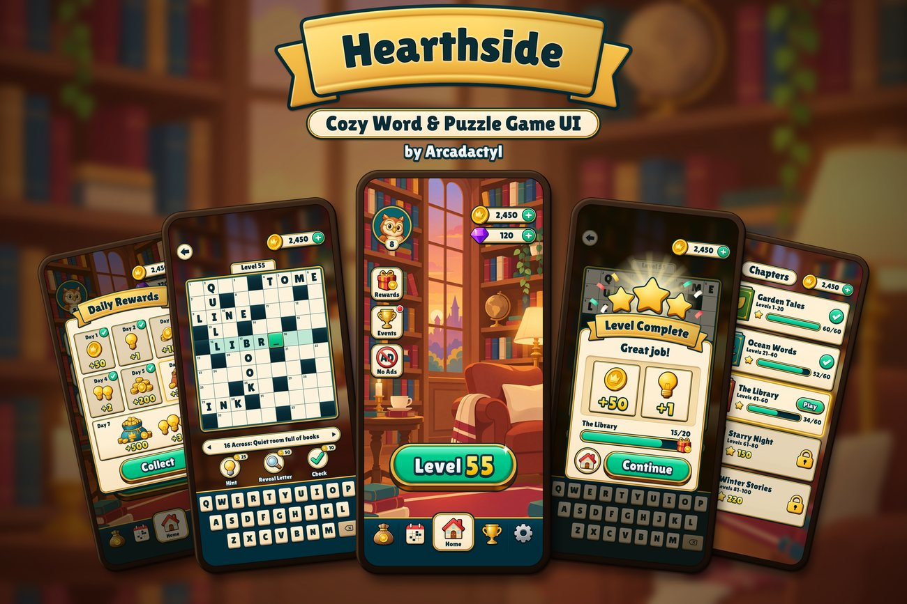

Hearthside
Cozy Word & Puzzle Game UI
A warm library-themed interface for word and puzzle games on phones: a crossword gameplay screen with its keyboard, a shop with coins and gems, daily rewards, events, chapters and levels, achievements and a leaderboard.
- 22 example screens
- 210 UI elements
- PNG sprites with slice borders
- Unity package with prefabs and a demo scene